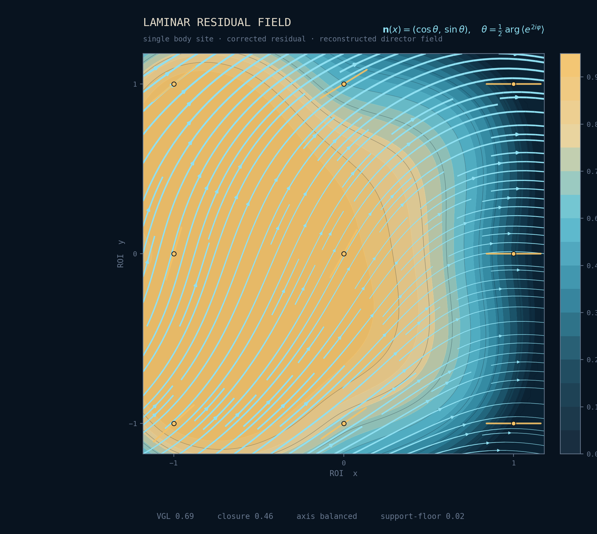

Consumer app · live
Membrane Health
A daily read of whole-body physiology from an Apple Watch, measured against the formal definition. In closed beta; general release August 8, 2026.
FieldfluxBiosystems
A formal, computable, machine-checked definition of health — and the instruments built to read it. As far as we know, the first of its kind. One definition, many instruments: a precision-health app, a patent-pending imaging platform, and the science beneath them.
Why we exist
Health has never had a formal, computable definition. Medicine has advanced as a science of disease — a detailed account of the ways the body fails — without a first-principles definition of the healthy state itself. We started from the other end: a formal definition of what it means to be whole, proved — machine-checked — all the way into the observable physics.

The platform
Everything we build is an expression of the same formal object — the ontology of health at the center, externalized into instruments that read it.
Consumer app · live
A daily read of whole-body physiology from an Apple Watch, measured against the formal definition. In closed beta; general release August 8, 2026.
Research instrument · in development
Quantum Phase-Coherence Imaging — one multimodal architecture that images how distributed sites hold phase together, scaling from the iPhone (via DRTT) to a hospital-grade quantum-sensor array. Patent-pending, and like everything here, measurement, not diagnosis.
Professional · pilots
Tools for clinicians, coaches, and researchers to read the same signals — consent-driven, time-bounded, and private by design.
The proof
The mathematics is open in its scale and shape; the mechanism is held close. Qualified partners and investors can request the technical brief. Request access →
Work with us
Foundational science, patent-pending IP, and a product in market. Investor materials on request.
For investors →Clinics, coaches, and researchers can run pilots and read the same signals in their own practice or study.
Pilots →A small team building foundational science. If this is your kind of problem, get in touch.
See careers →Contact
Get in touch about partnerships, pilots, or investment — or follow the research as it opens up.